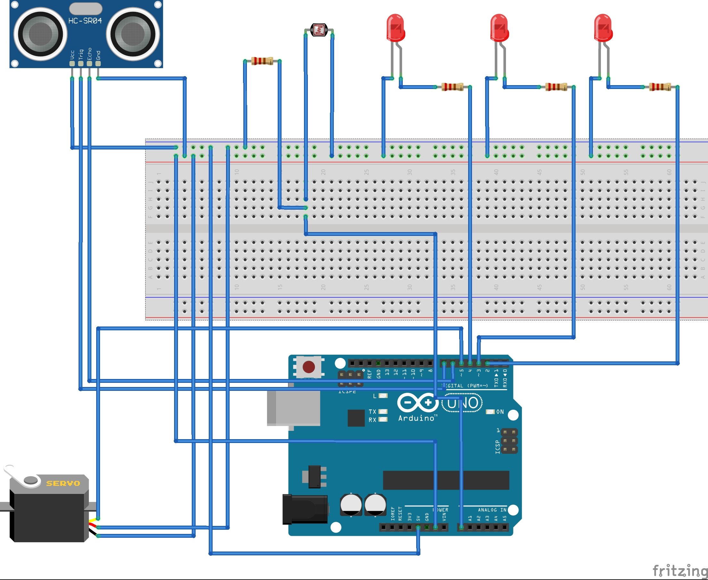

On the evening of October 14, after the conference, we met up in a professional classroom to start feeding the mosquitoes, no, doing our homework.
继上次讨论结束后，我们火速下单了所需的材料和器件，但是时间紧急，交作业前一天，我们的LED灯依旧还在运输中。10月14日晚，在会议结束后，我们相约专业教室开始喂蚊子，不，是做作业。
After arriving at the classroom, we started to do our "clouds" after a simple exchange with other groups.
抵达教室后，跟其他小组简单交流后便开始做我们的“云朵”。
First, we connected the wires, according to the circuit diagram drawn in advance by Zhang Chao will be small lights, photoresistors and other devices assembly.
先是连线，我们根据张超提前绘制好的电路图将小灯、光敏电阻等器件装配。
Then test the code program to see if it works the way we want it to.
然后试验代码程序，是否能正常工作，达到我们想要的效果。
#include
#define CDS A0
#define LEDA 2
#define LEDB 3
#define LEDC 4
Servo myservo; // create servo object to control a servo
int pos = 0; // variable to store the servo position
// 设定SR04连接的Arduino引脚
const int TrigPin = 8;
const int EchoPin = 9;
float distance;
int intensity = 0;
int state = 0;
void setup() {
// put your setup code here, to run once:
Serial.begin(9600);
pinMode(CDS, INPUT);
pinMode(LEDA, OUTPUT);
pinMode(LEDB, OUTPUT);
pinMode(LEDC, OUTPUT);
pinMode(TrigPin, OUTPUT);
// 要检测引脚上输入的脉冲宽度，需要先设置为输入状态
pinMode(EchoPin, INPUT);
Serial.println("Ultrasonic sensor:");
myservo.attach(10); // attaches the servo on pin 9 to the servo object
}
void loop() {
// put your main code here, to run repeatedly:
// 产生一个10us的高脉冲去触发TrigPin
digitalWrite(TrigPin, LOW);
delayMicroseconds(2);
digitalWrite(TrigPin, HIGH);
delayMicroseconds(10);
digitalWrite(TrigPin, LOW);
// 检测脉冲宽度，并计算出距离
distance = pulseIn(EchoPin, HIGH) / 58.00;
Serial.print(distance);
Serial.print("cm");
Serial.println();
delay(1000);
if (distance < 50) {
for (int i = 0; i <= 3; i += 1) {
for (pos = 0; pos <= 60; pos += 1) { // goes from 0 degrees to 180 degrees
// in steps of 1 degree
myservo.write(pos); // tell servo to go to position in variable 'pos'
delay(10); // waits 15ms for the servo to reach the position
}
for (pos = 60; pos >= 0; pos -= 1) { // goes from 180 degrees to 0 degrees
myservo.write(pos); // tell servo to go to position in variable 'pos'
delay(10); // waits 15ms for the servo to reach the position
}
}
}
intensity = analogRead(CDS) - 900;
Serial.print("intensity = ");
Serial.println(intensity);
if (intensity > 100) {
if (state == 0) {
digitalWrite(LEDA, HIGH);
delay(1000);
digitalWrite(LEDB, HIGH);
delay(2000);
digitalWrite(LEDC, HIGH);
} else {
digitalWrite(LEDA, HIGH);
digitalWrite(LEDB, HIGH);
digitalWrite(LEDC, HIGH);
}
if (state == 0) {
state = 1 - state;
}
} else if (intensity < 100) {
digitalWrite(LEDA, LOW);
digitalWrite(LEDB, LOW);
digitalWrite(LEDC, LOW);
if (state == 1) {
state = 1 - state;
}
}
}
Since the D&L team was also working on clouds, we wanted to differentiate, so we started brainstorming again about what features we could add. We focused on the imagery of "the moon rising from the clouds" and adopted Zhang Chao's idea of using infrared distance sensors and servos to make the moon sway when people get close to it. Later, when you pat the clouds, the moon will shake its body to greet you.
由于D&L小组也是做云朵，我们想加以区分，所以又开始了头脑风暴，思考着还可以加什么功能。我们聚焦“月亮从云中升起”这个意象，采纳了张超的想法：利用红外距离传感器和舵机，人一靠近，月亮就会摇摆。后来是人拍一拍云朵，月亮就会摇晃着身体和你打招呼。

The work of pasting cotton is very dangerous, the temperature of the glue gun is very high, if you are not careful, you will be burned ...... Zhang Chao, Weilin, Ming Yue, Qiao Qiao in the installation of the cloud light, Zhang You, Da Shuang in the other side of the editing video, the two lines are carried out in an orderly manner.
粘贴棉花的工作十分危险，胶枪的温度很高，稍不留意就会被烫到……张超、伟麟、明月、巧巧在装置云朵灯，张悠、大爽在另一旁剪辑视频，两条线有条不紊进行着。

In the end, under the pressure of both DDL and time, we were able to complete the assignment with amazing efficiency.
最终，在DDL和时间的双重压力下，我们以惊人的效率完成了这次的作业。

Here's our video showcase 👇
以下是我们的视频展示 👇